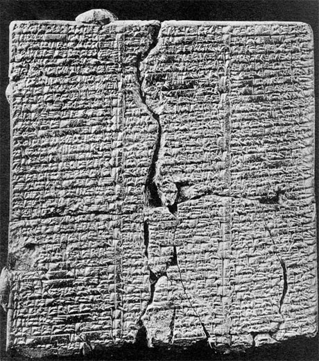

class: middle # 1. Origins of the Book: Clay Tablet <hr> Matthew J. Lavin Clinical Assistant Professor of English and Director of Digital Media Lab University of Pittsburgh January 2018 --- class: middle # Assyria, Babylonia and Sumer - ### Can you define how these groups are related? http://www.ancient.eu/timeline/babylon/ --- class: middle # Cuneiform <hr> - ### As we heard in the documentary, the term mean "wedge shaped" - ### "Fearsomely complex" (Robson 69) - ### "increasingly became a prestige medium" (69) --- class: middle # The Scribal Tradition <hr> - ### Many recovered tablets relate to scribal education (71) "House F" - ### Copy and Memorize (73) - ### Reed stylus technique (69) --- class: middle # Cultural Capital <hr> - ### What is a Colophon? - ### "Forced acquisition of cultural products" (76) <hr> ##### RELATED THOUGHT: ##### What is Iconoclasm? How is it similar to forced acquisition? --- class: middle # What is Textual Stability? <hr> # And why do we care about it? --- class: middle # Gleick on Sumerian <hr> "[T]he first language to be written ... left no other traces in culture or speech. Sumerian turned out to be a linguistic rarity, an isolate, with no known descendents. When scholars did learn to read the Uruk tablets, they found them to be, in their way, humdrum: civic memoranda, contracts and laws, and bills for barley, livestock, oil, reed mats, and pottery" (42). --- class: middle # Gleick on Clay Tablets <hr> "Their mathematics seemed to value computational power above all. ... This could not be appreciated until computational power began to mean something" (45) - ### Donald Knuth, 1972, defined their computations as early algorithms - ### More like contemporary computers than the math of Greece or Rome --- class: middle # From <em>Snow Crash</em> ##### by Neal Stephenson > "Egypt was a civilization of stone. They made their art and architecture of stone, so it lasts forever. But you can't write on stone. So they invented papyrus and wrote on that. But papyrus is perishable. So even though their art and architecture have survived, their written records -- their data -- have largely disappeared." <br></br> > "What about all those hieroglyphic inscriptions?" <br></br> > "Bumper stickers, Lagos called them. Corrupt political speech. They had an unfortunate tendency to write inscriptions praising their own military victories before the battles had actually taken place?' <br></br> > "And Sumer is different?" <br></br> > "Sumer was a civilization of clay. They made their buildings of it and wrote on it, too. Their statues were of gypsum, which dissolves in water. So the buildings and statues have since fallen apart under the elements. But the clay tablets were either baked or else buried in jars. So all the data of the Sumerians have survived. Egypt left a legacy of art and architecture; Sumer's legacy is its megabytes." See http://akkartik.name/post/snow-crash --- class: middle  --- class: middle # Gilgamesh <hr> - ### Later work comparatively - ### "much longer and more standardized composition" than previous tablets (75) - ### Gilgamesh had an influence on later epics and the Bible. --- class: middle - ### By 2500 BCE, Gilgamesh had come to be deified (6) - ### City of Nineveh was sacked and razed in 612 BCE (8) - ### British began to excavate the site in 1840s, uncovered the palace in 1849 (8) Ziolkowski, Theodore. <em>Gilgamesh among Us : Modern Encounters with the Ancient Epic</em>. Ithaca: Cornell University Press, 2011. Accessed January 16, 2018. ProQuest Ebook Central. --- class: middle - ### British also began deciphering cuneiform at the same time (8) - ### Were interested in Gilgamesh because it contains a flood narrative (9) - ### Initially known as the "Izdubar legend" (15) Thought it was Nimrod of the Bible Ziolkowski, Theodore. <em>Gilgamesh among Us : Modern Encounters with the Ancient Epic</em>. Ithaca: Cornell University Press, 2011. Accessed January 16, 2018. ProQuest Ebook Central. --- class: middle # Gilgamesh, Tablet VI - ### How does the Gilgamesh excerpt depict the relationship between humans and gods? - ### How can we understand the insults that Gilgamesh hurls at Ishtar? Why does Anu suggest that Ishtar provoked Gilgamesh? - ### What does this episodes suggest about notions of right and wrong? How about power and strength? - ### Tablet VII narrates Enkidu's dream. What does the prominence of dreams in ancient narratives suggest?